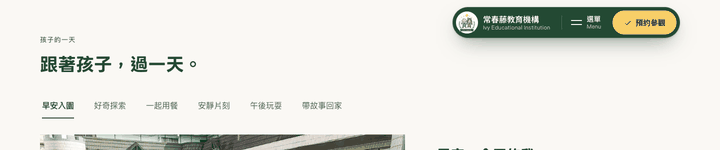
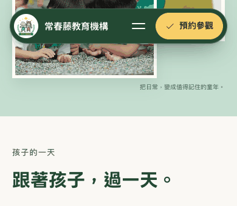

不管膠囊放哪裡，它都是固定的、內容會從底下捲過去，所以一定會蓋到東西。這一版改成看方向：往下看內容時膠囊滑走，畫面完全乾淨；想找導覽時往上撥一下，它就回來。這是行為，不是位置，可以跟任何一種擺法搭配，下面用的是站上定案的「整顆靠右」。
主站加了預覽參數：index.html?autohide=1#/home。目前沒有套用到預設，站上仍是一直顯示。
左右是同一個首頁，捲動任一邊另一邊會跟著。兩邊都已經先捲過首屏，直接往下滑再往上撥，比較膠囊在不在。


好處。閱讀時畫面完全乾淨，膠囊不再蓋到標題或照片，「放哪裡」的壓力也跟著變小——不管靠左、靠右還是置中，只要往下看就不在了。手機因為畫面小，差別最明顯。
代價。導覽與「預約參觀」不再隨時看得見，家長想預約時要先往上撥一下。對不熟悉這個手勢的長輩，可能會覺得東西「不見了」。另外捲動方向判斷偶爾會誤觸發，例如用滑鼠滾輪小幅來回時。
折衷做法。可以只收起左邊的校徽、右邊的「選單＋預約」永遠留著，這樣預約入口一直在，畫面又比現在乾淨。要的話我再做一版來比。
目前只是預覽參數，主站預設沒有改。決定要用再套成預設。
| 項目 | 設定 |
|---|---|
| 觸發 | 捲動方向，門檻 6px；用 requestAnimationFrame 節流，不綁計時器 |
| 收起 | 往上位移整顆高度＋頂距＋10，同時淡出；0.32 秒 |
| 出現 | 回到原位；0.34 秒 |
| 例外 | 選單開啟、焦點在膠囊、接近頁首、捲到底、減少動態 |
| 切換 | ?autohide=1 |
| 搭配 | 與五種擺法皆可組合，圖用的是站上定案的靠右 |